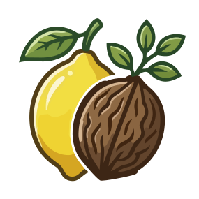

Chincolco, Petorca
Si te equivocaste, corrige aquí los plazos (no cambia el stock) o anula la aplicación (el stock del producto se recupera).
Entre hileras × sobre la hilera. Si lo dejas vacío se usa el de la especie (nogal 6 × 5 m, limón 6 × 3 m).
Elige un producto para indicar su dosis.
Elige un producto para indicar su dosis.
ya regado programado
Elige los días y se marcan solos en el calendario (próximas 4 semanas, o hasta «Repetir hasta»). Después puedes quitar o agregar días tocando el calendario.
Sirve para cualquier mezcla al X %: 1 % son 10 mL (o 10 g) de producto por cada litro de mezcla. Ejemplo: mezcla de bencina y aceite para motor de 2 tiempos al 2 % (1 parte de aceite en 50 de bencina).
Escribe los datos para ver el resultado.
Arrastra el asa de la izquierda, o usa las flechas. Los horarios se recalculan solos, uno tras otro.
Es obligatorio. Queda guardado con tu nombre y la fecha, y el riego no se puede volver a programar desde aquí.
Mínimo 10 letras. Queda guardado con tu nombre y la hora en cada riego anulado.
Con este email la app reconoce su cuenta y comprueba su registro de llegada.
Si en uno de esos días no marca su llegada, la app te pregunta si no llegó.
Si algo no funciona, no entiendes un paso o tienes una idea para mejorar la app, escríbelo aquí. Diego lo recibe con la pantalla donde estabas.
Opcional. Si tienes la ubicación activada, Diego también ve dónde estabas.
Descuentan los días de lunes a viernes. Sábados, domingos y feriados no descuentan. El medio día descuenta 0,5.
Queda anotado en el «Calendario» y en «Personal». No descuenta días de nadie.
«Adeudados»: el día no se descuenta de sus días libres y queda a tu favor en la tarjeta «Adeudados» de Trabajadores. Esto solo lo ves tú; los demás ven únicamente «Ausencia».
Diego te pide que completes tu información personal en la app: nombre, teléfono, fecha de nacimiento y un contacto de emergencia. Solo tú y Diego ven tus datos (el equipo ve únicamente tu cumpleaños). Toma un minuto.
Tu nombre completo, teléfono y contacto de emergencia solo los ves tú y los ve Diego. Tu fecha de nacimiento la ve el equipo, para avisarles de tu cumpleaños con unos días de anticipación (a ti no te llega ese aviso).
Cada persona aparece una sola vez: su cuenta (con la que marca llegada, comprobada por email) y su ficha de Personal, enlazadas. El apodo es cómo se le nombra en la app.
El motivo, la licencia y la nota solo los ves tú. Los demás ven únicamente «Ausencia».
Escribe los días que le corresponden según su contrato. La app resta los permisos aprobados.
La jornada diaria es esa cantidad dividida en 5 días y la media jornada es la mitad. Los registros ya hechos no cambian.
Las partidas y ventas ya hechas siguen con la tarifa que regía ese día.
Borra los datos de prueba. Se conservan: productos y su stock, movimientos de stock, personal y fichas, terceros y tarifas, sectores, medidores y todas sus lecturas, cosechas, bodega, ventas, equipo y roles. Los registros que elijas borrar no se pueden recuperar: por eso primero se descarga un respaldo.
Por defecto es marzo: la temporada va de marzo a febrero. Las cosechas ya registradas se reagrupan solas.
Tambor enderezado y ampliado: escribe arriba los 7 dígitos (son los m³ enteros). Si el último está girando, anota el que está subiendo.
Puedes cargar también los meses del año pasado para compararlos en el gráfico.